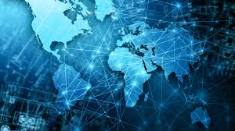

Интернет — глобальная система взаимосвязанных компьютерных сетей, которая использует стандартизированный набор протоколов TCP/IP для передачи данных. Это пространство, где миллионы людей со всего мира общаются, работают, учатся и развлекаются.
Создание интернета началось в 1960-х годах, когда американские военные начали искать способы соединения компьютеров в одну сеть для передачи данных. Этот проект получил название ARPANET и стал прародителем современного интернета.
Вот основные этапы развития интернета:
Существует несколько ключевых технологий, которые сделали интернет тем, чем он является сегодня:
Сегодня интернет оказывает влияние на все сферы общества:
Преимущества использования интернета:
С развитием технологий интернет продолжает эволюционировать. В будущем нас ждут новые инновации, такие как интернет вещей, искусственный интеллект и виртуальная реальность, которые изменят наше представление о возможностях сети.
Ниже представлено изображение, связанное с развитием интернета:
Если вы хотите узнать больше об истории интернета, посетите следующий сайт: История Интернета.